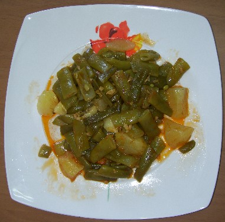
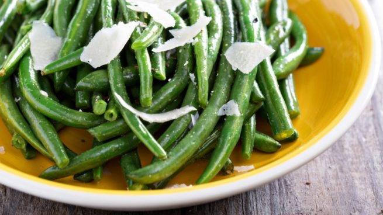
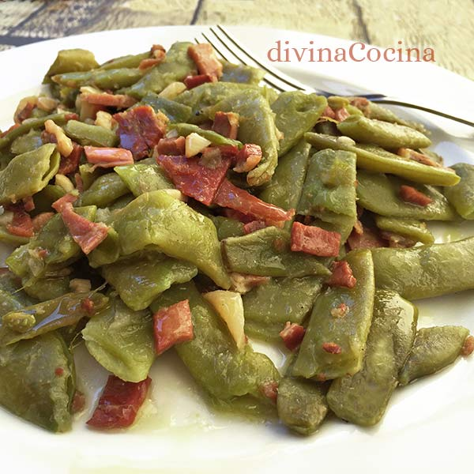

Sabrás todo tipo de información sobre las judias verdes del siglo xxi. Carlos, Lucas, Alejandro e Ivan
JUDÍA VERDE
La fama de saludable de esta verdura es bien merecida: no solo resulta ligera y depurativa sino que enriquece la dieta con sus abundantes minerales y vitaminas. En la cocina su versatilidad invita a descubrir sus numerosas posibilidades.
De la judía verde podría decirse que es hortaliza

Constituye un ejemplo más de las incorporaciones alimentarias a la dieta mediterránea a lo largo de su historia, caracterizada por su capacidad para integrar nuevos productos y haber dado lugar así a un espacio alimentario de un extraordinario mestizaje cultural.
Efectivamente, las judías verdes proceden, según la mayoría de historiadores, del continente americano, concretamente de América Central
Propiedades de las judías verdes
Tiene pocas calorías (35 cal/100 g), pues en su composición hay un alto porcentaje de agua (90%) y apenas contiene grasa (0,6%). El resto está constituido por hidratos de carbono (4,2%) y una pequeña proporción de proteínas (1,9%), que la convierten en un alimento de fácil digestión.

Además, cuenta con un notable aporte en fibra
La judía verde es rica sobre todo en vitamina C (23,4 mg/100 g), aunque también en vitaminas del grupo B, como la B6 (0,22 mg) y la B9 o ácido fólico (60 mcg).
es un alimento ideal para incluir en las dietas depurativas y de adelgazamiento.

este alimento debería incluirse en la dieta de aquellas personas que presenten problemas de hipercolesterolemia o hiperglucemia
Huesos fuertes
La presencia de silicio en la judía verde se ha correlacionado con una mejor densidad ósea en la madurez. El silicio es importante para la formación de la masa esquelética.
Se comercializan fundamentalmente dos variedades: las de vaina ancha y las más estrechas de forma cilíndrica, que contrastan con el aspecto aplanado de las anteriores.
No hay que consumirlas crudas, pues contienen una sustancia llamada faseolina con cierta capacidad tóxica que desaparece con la cocción.
Enlace a más informacion de las judias verdes